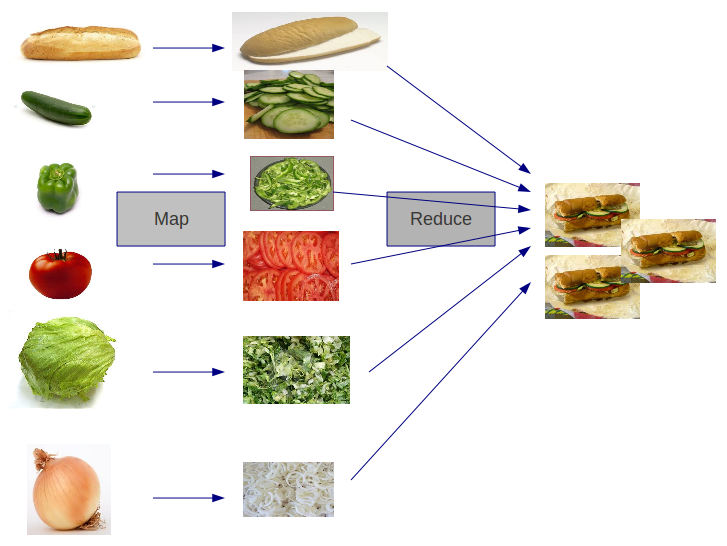
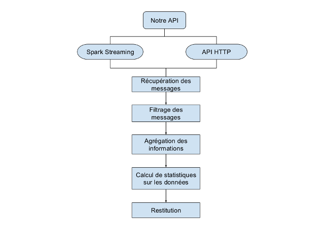

Projet CASI
Big Data and Tweet Streaming
Équipe DataTeam
Christophe Cluizel et Thibaud Dauce
Présentation du projet


De nombreux acteurs…
- Amazon
… et de nombreux projets open-source
- Hadoop Distributed File System
- Apache Hadoop
- Apache Spark
Techniques de pointe
Map Reduce
Fonctionnement Master / Slave
- Envoi des tâches aux workers
- Éxecution des tâches sur les workers
- Récupération de tous les résultats
- Aggrégation des résultats sur le master
Queues de messages
Gestion des flux de données en temps réel
- Envoi des données dans un endpoint
- Répartition des données dans plusieurs queues distribuées
- Traitement des données avec plusieurs workers
Deux solutions possibles
Métriques de comparaison
- Le temps de réponse de l'ensemble de la chaîne
- Le temps de réponse de la tâche
- Vitesse de transmission entre l'API Twitter et le prototype
- Nombre d'erreurs liées à la mémoire
- Pourcentage d'utilisation du CPU
- Nombre d'étapes pour installer le prototype
- Nombre de configurations nécessaires pour pouvoir utiliser le prototype
- Nombre de machines utilisables pour effectuer les traitements de la chaîne
Streaming HTTP (non implémenté)
Téléchargement d'un fichier infini
- Vieilles implémentations existantes
- Traitement des tweets à la chaîne
- Queue de messages à implémenter
Spark Streaming (implémenté)
Consommation des tweets en distribué
- Bibliothèque existante
- Scaling facile et intégré
- Traitement par lots

Démo
Résultats
| Lot | Nombre de tweets | Temps de traitement | Temps d’exécution |
|---|---|---|---|
| 1 | 39 tweets | 9ms | 28,1s |
| 2 | 27 tweets | 21ms | 29,2s |
| 3 | 49 tweets | 19ms | 30,2s |
Traitement de 30,59 tweets par seconde, 10% d'utilisation du CPU (2 x 2.00GHz), aucune tâche échouée.